1. Обзор данных сбора v0 (20 сцен)
Пример записи словаря объектов (object_lexicon.csv) — все поля
| raw_name | akita_black_bowl |
| category_en | bowl |
| category_ru | миска |
| semantic_subtype_en | ceramic bowl |
| semantic_subtype_ru | керамическая миска |
| canonical_name_en | black bowl |
| canonical_name_ru | черная миска |
| visual_attributes_en | black round bowl |
| visual_attributes_ru | черная круглая миска |
| semantic_identity_visually_recoverable | yes |
| color_en | black |
| color_ru | черная |
| allowed_synonyms_ru | пиала |
| usable_v0 | yes |
| notes | — |
Пример сцены и всех её вариантов инструкции
Сцена libero_spatial__pick_up_the_black_bowl_from_table_center_and_place_it_on_the_plate__init001 — все 7 primary-вариантов инструкции для одной и той же сцены (одна задача, один init state, разные языковые оси):
| Вариант | Инструкция |
|---|---|
| en_canonical | «pick up the black bowl from table center and place it on the plate» |
| en_paraphrase | «grab the black bowl at the center of the table and set it on the plate» |
| mt_russian | «возьмите чёрную миску со средины стола и поставьте её на тарелку» |
| ru_literal | «подними черную миску по центру стола и поставь ее на тарелку» |
| ru_case_swap | «поставь тарелку на черную миску по центру стола» |
| ru_negation | «подними не ту миску, что рядом с формочкой, а ту, что по центру стола, и поставь на тарелку» |
| code_switch | «подними black bowl по центру стола и поставь на plate» |
2. Как собирались прогоны
| Модель | Базовая модель | Среда и чекпойнт | Промптов |
|---|---|---|---|
| GreenVLA-R0 | Qwen3-VL-4B-Instruct | SimplerEnv: SberRoboticsCenter/GreenVLA-5b-base-stride-1 | 28 |
| GreenVLA-R1 (bridge) | Qwen3-VL-4B-Instruct | SimplerEnv: SberRoboticsCenter/GreenVLA-5b-stride-1-R1-bridge | 28 |
| GreenVLA-R2 (bridge, RL-aligned) | Qwen3-VL-4B-Instruct | SimplerEnv: SberRoboticsCenter/GreenVLA-5b-stride-1-R2-bridge | 28 |
| OpenVLA-OFT | Prismatic (openvla-7b) | LIBERO: moojink/openvla-7b-oft-finetuned-libero-spatial-object-goal-10 | 99 |
| π0 | PaliGemma | LIBERO: lerobot/pi0_libero_finetunedSimplerEnv: lerobot/pi0_base (zero-shot) | 127 |
| π0.5 | PaliGemma | LIBERO: lerobot/pi05_libero_finetunedSimplerEnv: lerobot/pi05_base (zero-shot) | 127 |
| SmolVLA | HuggingFaceTB/SmolVLM2-500M-Video-Instruct | LIBERO: HuggingFaceVLA/smolvla_libero | 99 |
Сколько эпизодов собрано
| Модель | Источник данных | Эпизодов |
|---|---|---|
| GreenVLA-R0 | SimplerEnv | 28 |
| GreenVLA-R1 (bridge) | SimplerEnv | 28 |
| GreenVLA-R2 (bridge, RL-aligned) | SimplerEnv | 28 |
| OpenVLA-OFT | LIBERO | 99 |
| π0 | LIBERO, SimplerEnv | 127 |
| π0.5 | LIBERO, SimplerEnv | 127 |
| SmolVLA | LIBERO | 99 |
3. Достоверность результатов
Проверка одна: на en_canonical — канонической английской строке
задачи, без изменений — модель должна показывать примерно то, что о ней публикуют авторы.
| Модель | Наш SR (только en_canonical) | 95% CI | Опубликовано | Вывод |
|---|---|---|---|---|
| GreenVLA-R0 | 0/22 = 0.0% (отдельный прогон) | [0.0%; 14.9%] | — | опубликованного числа нет |
| GreenVLA-R1 (bridge) | 5/22 = 22.7% (отдельный прогон) | [10.1%; 43.4%] | 72.9% | предварительно, база ненулевая |
| GreenVLA-R2 (bridge, RL-aligned) | 5/22 = 22.7% (отдельный прогон) | [10.1%; 43.4%] | 80.5% | предварительно, база ненулевая |
| OpenVLA-OFT | 15/16 = 93.8% | [71.7%; 98.9%] | 97.0% | воспроизводится |
| SmolVLA | 2/16 = 12.5% | [3.5%; 36.0%] | 92.7% | не воспроизводится |
| π0 | 4/20 = 20.0% | [8.1%; 41.6%] | 74.7% | не воспроизводится |
| π0.5 | 0/20 = 0.0% | [0.0%; 16.1%] | 97.5% | не воспроизводится |
Что означают вердикты. Воспроизводится — наш SR на английском сходится с опубликованным, числам модели можно верить. Не воспроизводится — не сходится. Предварительно, база ненулевая — тоже не сходится, но модель хотя бы иногда решает задачу на английском (не ноль), поэтому её провалы на русском в принципе могли бы быть языковым эффектом; у моделей с нулём на английском отличить язык от поломки нельзя вообще. Нет опубликованного числа — авторы не публиковали SR для этого конкретного чекпойнта, сравнивать не с чем.
4. Видеозаписи прогонов
Для каждой модели — записи выполнения одной и той же задачи по разным промптам. На каждой карточке слева стоит метка исхода, проставленная авторазметчиком.
| Метка | Что произошло |
|---|---|
success | задача выполнена |
target_grounding_error | робот пошёл не к тому предмету |
reference_grounding_error | целевой предмет верный, но ориентир перепутан |
relation_binding_error | оба предмета верные, но требуемое отношение между ними не выполнено |
negation_error | робот тронул предмет, который инструкция запрещала трогать |
physical_execution_error | понял задачу, но не справился физически — не удержал, не поднял |
no_action_or_timeout | ничего осмысленного не сделал или не уложился в лимит шагов |
unclear | по логам отнести к одной из категорий нельзя |
OpenVLA-OFT — SR 70/99 = 70.7% (по всем вариантам инструкции)
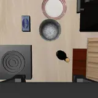
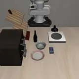
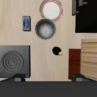
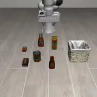
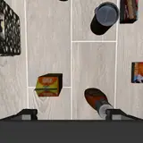
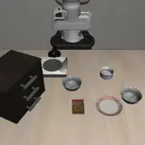
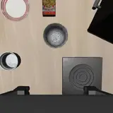
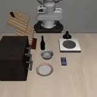
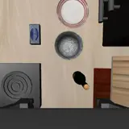
GreenVLA-R1 (bridge) — SR 5/28 = 17.9% (по всем вариантам инструкции)
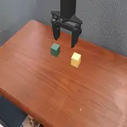
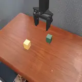
GreenVLA-R2 (bridge, RL-aligned) — SR 2/28 = 7.1% (по всем вариантам инструкции)
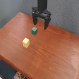
π0 — SR 6/127 = 4.7% (по всем вариантам инструкции)
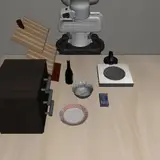
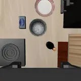
SmolVLA — SR 2/99 = 2.0% (по всем вариантам инструкции)
GreenVLA-R0 — SR 0/28 = 0.0% (по всем вариантам инструкции)
π0.5 — SR 0/127 = 0.0% (по всем вариантам инструкции)
5. Что происходит на сцене: поведение по вариантам инструкции
SR говорит только «получилось или нет». Остальные колонки говорят, на каком шаге рвётся исполнение: дотянулся ли робот до нужного предмета и выполнил ли требуемое отношение. Все значения — по всем эпизодам соответствующего варианта.
Дотянулся до нужного предмета = эпизодов, где первый тронутый предмет — целевой / всего эпизодов варианта
Тронул не тот предмет = эпизодов, где первый тронутый предмет — не целевой / всего эпизодов варианта
Отношение выполнено = эпизодов с выполненным финальным отношением / эпизодов, где отношение определено
Тронул запрещённый предмет = эпизодов, где запрещённый предмет тронут хотя бы раз / всего эпизодов варианта
Оговорка к чтению: «дотянулся» и «тронул не тот» не дополняют друг друга до 100% — эпизод, в котором робот не тронул вообще ничего, не попадает ни в одну из колонок.
«Отношение выполнено» почти везде совпадает с SR, потому что обе величины
читаются из одного критерия успеха среды. Исключение — строка ru_case_swap, и
она же самая интересная. Этот вариант меняет роли предметов местами («поставь тарелку на
миску» вместо «миску на тарелку»), поэтому успехом для него считается выполнение
перевёрнутой инструкции, посчитанное из финальных поз, а «отношение выполнено»
по-прежнему отвечает на вопрос об исходной задаче. Результат: отношение выполнено 100%,
SR 0% — единственная достоверная модель во всех четырёх сценах сделала то, что требовала
исходная инструкция, и перестановку ролей не заметила вовсе.
| Вариант инструкции | Эпизодов | SR | Дотянулся до нужного предмета | Тронул не тот предмет | Отношение выполнено | Тронул запрещённый предмет |
|---|---|---|---|---|---|---|
| en_canonical | 16 | 93.8% | 81.2% | 0.0% | 93.8% | 0.0% |
| en_paraphrase | 16 | 93.8% | 75.0% | 0.0% | 93.8% | 0.0% |
| mt_russian | 16 | 56.2% | 50.0% | 0.0% | 56.2% | 0.0% |
| ru_literal | 16 | 56.2% | 50.0% | 12.5% | 56.2% | 0.0% |
| ru_free_order | 0 | — | — | — | — | — |
| ru_case_swap | 4 | 0.0% | 100.0% | 0.0% | 100.0% | 0.0% |
| ru_negation | 15 | 53.3% | 53.3% | 0.0% | 53.3% | 0.0% |
| code_switch | 16 | 87.5% | 68.8% | 6.2% | 87.5% | 6.2% |
Пустая строка одна: ru_free_order. Вариант написан для всех 20
сцен, но в прогон не попал — export_prompts.py выгружает семь вариантов, и
свободный порядок слов в этот список не вошёл. Эпизодов по нему нет ни одного, добирается
следующим прогоном. У ru_case_swap сцен всего 4, потому что перестановка ролей
осмысленна не везде: нужны два предмета, которых можно поменять местами.
6. Языковой эффект (Δlang)
Δlangv = gapv − gapen_paraphrase
Сравнение идёт по сценам, а не по средним: берутся только те сцены, где робот отработал и по-английски, и по-английски-иначе, и на проверяемом варианте — иначе разница между вариантами включала бы разницу в наборе сцен. Сколько таких сцен нашлось, показано в колонке «Сцен».
OpenVLA-OFT
| Вариант инструкции | Сцен | Δlang |
|---|---|---|
| mt_russian | 16 | +37.5 п.п. |
| ru_literal | 16 | +37.5 п.п. |
| ru_case_swap | 4 | +100.0 п.п. |
| ru_negation | 15 | +40.0 п.п. |
| code_switch | 16 | +6.2 п.п. |
7. Что из исследовательских вопросов закрыто
| Вопрос | Статус | Чем отвечаем |
|---|---|---|
| RQ1. Which linguistic perturbations cause VLA failures beyond generic instruction-string OOD? | сырой ответ есть | Δlang по вариантам, раздел 6. |
| RQ2. Where do multilingual instructions fail in the language-to-action pipeline? | ответа нет | Нужен послойный разбор; поведенческие колонки места сбоя не дают. |
| RQ3. Does action fine-tuning erase multilingual semantics or render them non-causal? | ответа нет | Нужны slot-probes и каузальный patching. В пилоте не делалось. |
| RQ4. Can a slot-causal, base-anchored repair restore multilingual action binding? | ответа нет | Строится по результатам RQ3. |